Publicación de una página web¶
Publicación de una página web¶
Publicarlas una página web supone alojarla en un servidor de Internet y elegir un nombre de dominio para que todo el mundo pueda verlas desde su dispositivo.
Obtener alojamiento y un nombre de dominio¶
Si deseas un control total sobre tu sitio web publicado, probablemente necesitarás gastar dinero para comprar:
- Alojamiento (Hosting) : Es un espacio de almacenamiento alquilado en el servidor web de una compañía de alojamientos. Pones los archivos de tu sitio web en este espacio, y el servidor web suministra el contenido a los usuarios que lo solicitan.
Existen alojamientos gratuitos, pero suelen ser muy limitados o incluir publicidad.
- Un nombre de dominio : Es una dirección única (URL) mediante la cual la gente puede encontrar tu sitio web, como https://www.mozilla.org, o https://es.wikipedia.org/. Puedes tomar en alquiler el nombre de tu dominio durante algunos años en un registrador de dominio. Los nombres de dominio terminan en un punto y algunas letras que nos da información sobre el contenido de la página.
Existen dominios gratuitos, pero suelen ser largos y difíciles de recordar.
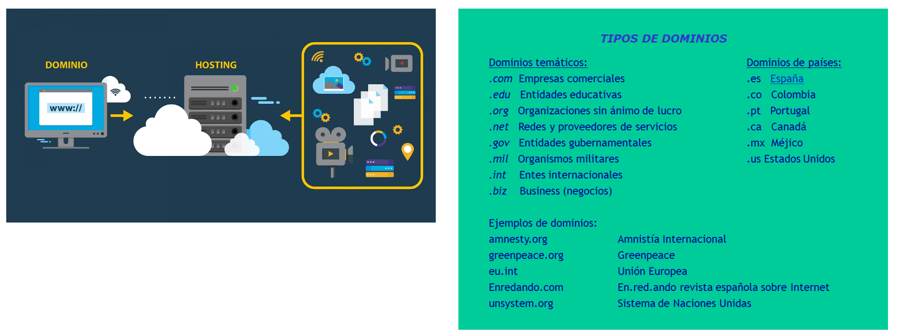
Existen algunos alojamientos gratuitos sin publicidad, como GitHub o Dropbox.
En el siguiente vídeo de Youtube ser muestra cómo conseguir un hosting y dominio no muy extenso y gratuitos con GitHub.
Una vez que hayamos elegido la empresa de hosting que vamos a utilizar, dicha empresa nos dará la dirección de Internet de nuestra carpeta donde vamos a alojar nuestros archivos. Si queremos que se cargue una página por defecto sin indicar su nombre debemos subir a nuestro servidor una página html con el nombre index (index.html)
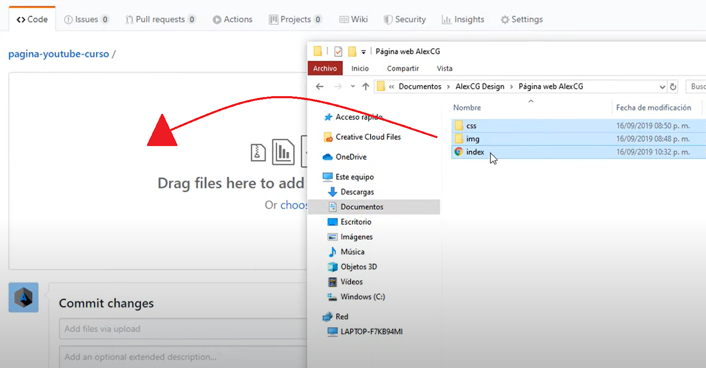
Actividad
📝 AA4.22 Alojamiento web¶
(C.ESP2 / CE2.5 / IC1-3p)
- ¿Qué necesitamos para publicar una página web en internet?
- ¿Qué es un alojamiento y dónde podemos conseguirlo?
- Busca en Internet un alojamiento web e indica el dinero que cuesta mantenerlo durante 1 año.
- ¿Qué es un nombre de dominio? Qué significan los siguientes dominios: .gov .org .edu .com
- Nombra algunos alojamientos gratuitos y sin publicidad.
- Describe cómo podemos subir nuestros archivos a nuestro hosting.
BLOGGER¶
BLOGGER es una plataforma para crear blogs gratuita de una forma súper rápida y sencilla y que, además puedes personalizarse a tu gusto fácilmente.
En el siguiente vídeo de Youtube ser muestra cómo crear un blog empleando la plataforma Blogger.
Primeros pasos para crear una cuenta en Blogger¶
Lo primero que debes hacer es dirigirte a la página principal de Blogger.
En esta ventana encontramos, arriba a la derecha, un botón de “Iniciar sesión”. Cuando tengas creada tu cuenta debes acceder desde aquí, pero mientras tanto haz clic en el botón de “Crea tu blog”.
Haz clic en “Crear tu blog” para comenzar.
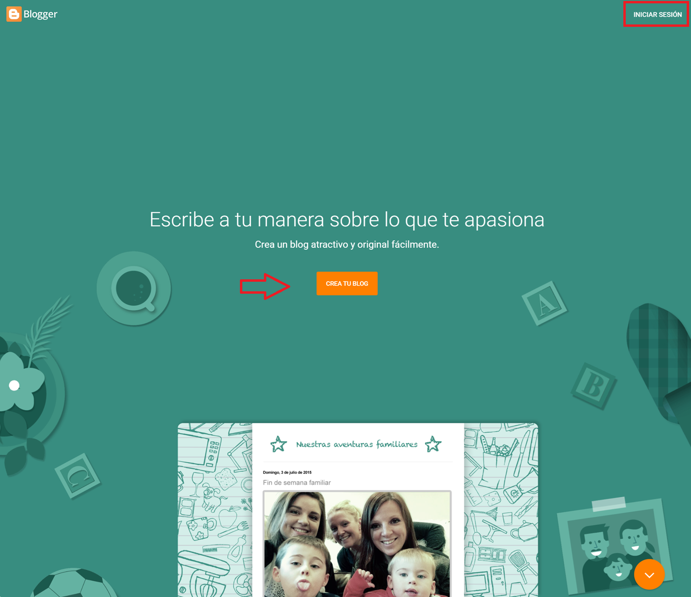
Blogger forma parte de Google, por lo que la cuenta qué crees para meterte en Blogger ha de ser un Gmail.. Tienes dos opciones, crear una nueva cuenta solamente para tu blog, o utilizar la que ya tienes de forma personal.
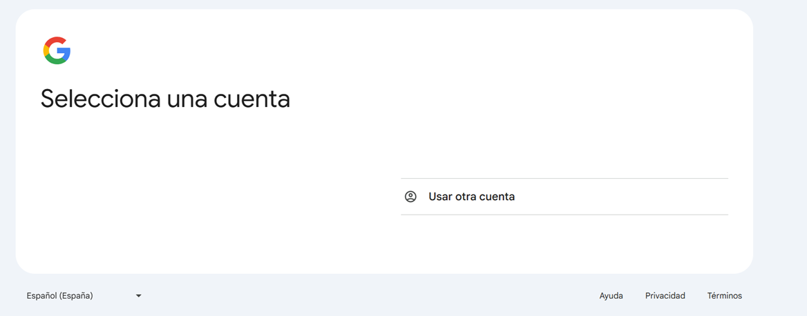
Sea cual sea la opción que hayas elegido, llegarás a esta ventana, en la que tienes que elegir el nombre visible de tu sitio web. Este nombre es el que van a ver los usuarios cuando se metan a ver tu blog por lo que resulta un nombre bastante importante.
Escribe el nombre que quieras para tu sitio web.
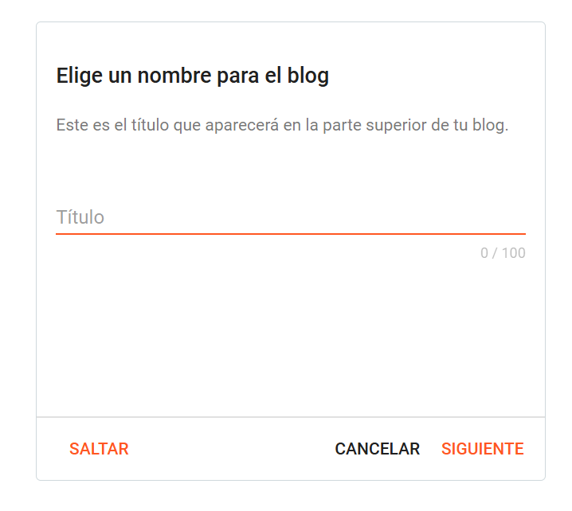
A continuación, debes elegir la URL de tu blog. Esto es la dirección que va a tener el sitio web, es decir la ruta de Google que vas a tener que escribir para acceder a él, por lo que, se recomienda que la URL no contenga nombres raros ni muchos números seguidos.
Introduce la dirección web que tendrá tu blog.
Es bastante difícil encontrar una dirección que no esté cogida a la primera, por lo que este trabajo seguramente te lleve un buen rato.
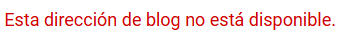
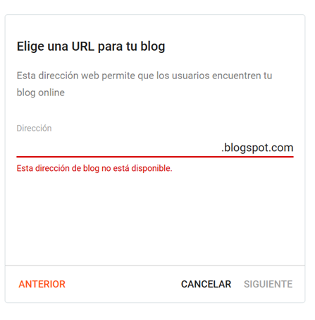
Finalmente tenemos que elegir el nombre de nuestro blog. Este es el título que va a tener la portada (no te preocupes, porque también puedes modificarlo más adelante.)
Este es el nombre de ejemplo para crear el blog.
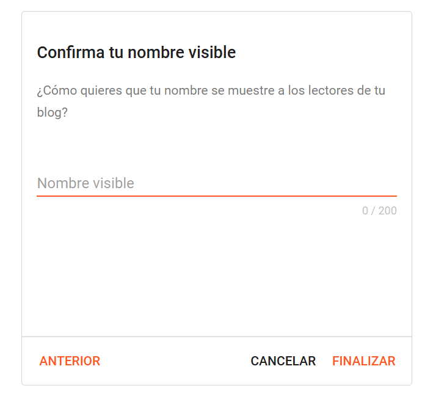
Y ¡por fin!, ya accedes a la página principal de tu blog. A la izquierda hay un menú lateral con los diferentes apartados que tiene Blogger, y a la derecha, la pantalla principal dónde irás viendo el contenido de cada sección, los cuales son:
- Entradas: son los post o artículos que vamos a incluir en nuestro blog.
- Estadísticas:es donde vamos a ver los datos de nuestro sitio web, como por ejemplo, las visitas semanales mensuales o anuales; o incluso las visitas de cada post.
- Comentarios: dónde vamos a ver un listado de todos y cada uno de ellos y podemos filtrar los o modificarlos.
- Ingresos:es donde se reflejan los ingresos en caso de tener una cuenta de AdSense.
- Página: es la que da la estructura a tu sitio web como, por ejemplo, la página de inicio la de contacto o la página de servicios.
- Diseño: establece la arquitectura de la web.
- Tema: establece la apariencia de la web.
- Configuración: es donde vas a encontrar los ajustes generales de tu blog, como poder editar el título, el tipo de privacidad o los permisos.
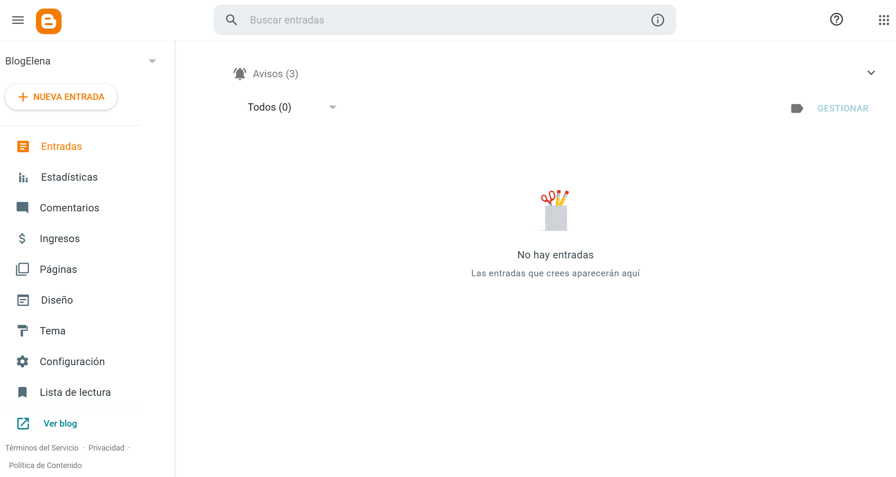
Cómo crear una nueva entrada en Blogger¶
Ir a la sección de entradas, y hacer clic en el botón de “Crear nueva entrada”, que hay arriba a la izquierda.
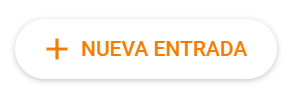
En esta pantalla ves arriba una línea donde debemos poner el título que va a llevar este post. En el panel principal vemos como un folio en blanco, que es donde va a ir el contenido principal. A la derecha hay una barra lateral de herramientas.
- Indica el nombre de tu página en el apartado de “Título“
-
Indicar el contenido del post.
En la barra superior de herramientas encontramos entre otras cosas, cómo poner algunas de las letras en negrita, cursiva o subrayada. También tenemos la opción de cambiar el texto del párrafo o del encabezado de tamaño o tipo de letra.
Para incluir un hipervínculo tienes que hacer click en el botón del enlace e indicar la web.
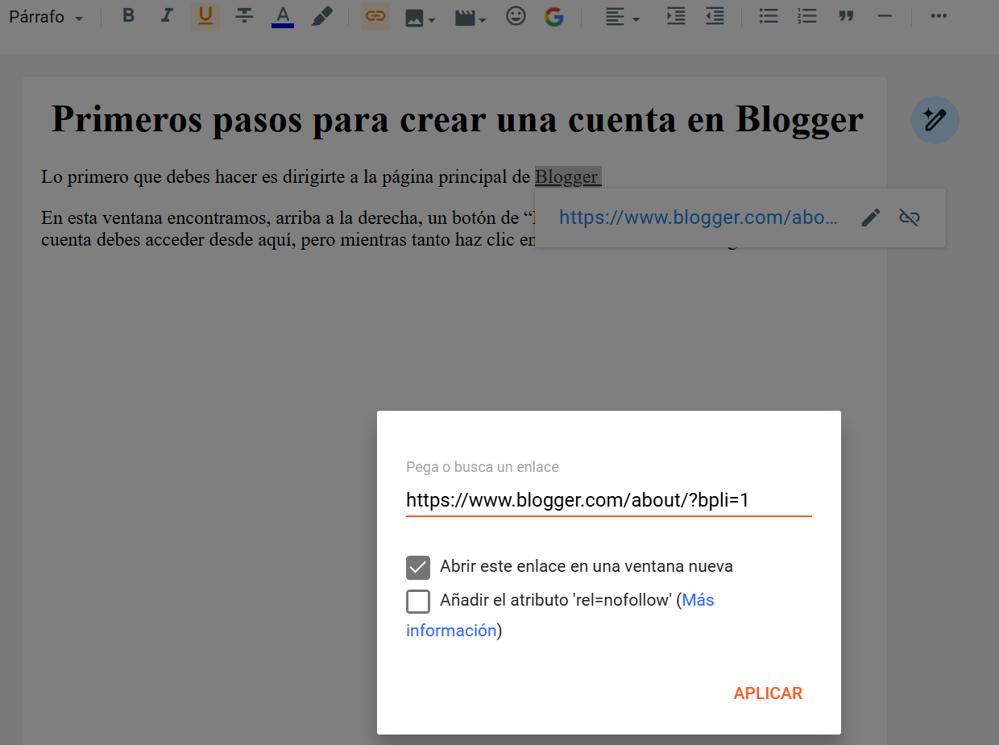
Hipervínculo Para adjuntar una foto tienes que hacer clic en el botón de imagen y seleccionar de tu ordenador el fichero deseado.
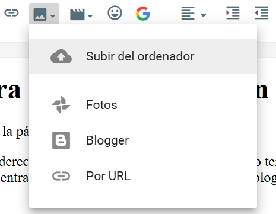
Subir imagen del ordenador Para editar una imagen, haz clic sobre ella.
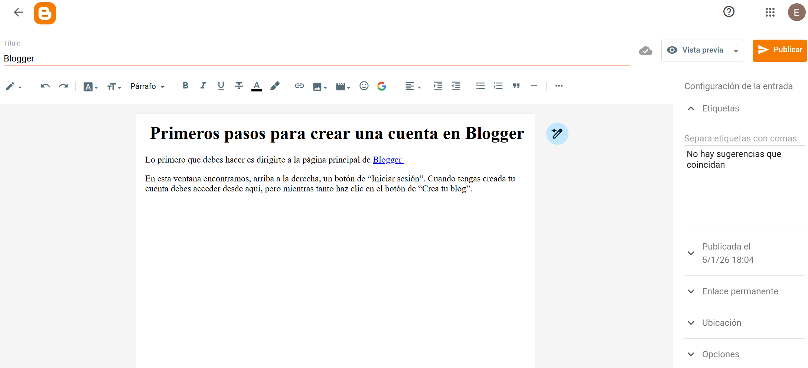
Para ver cómo quedaría tu entrada, haz clic en “Vista previa“
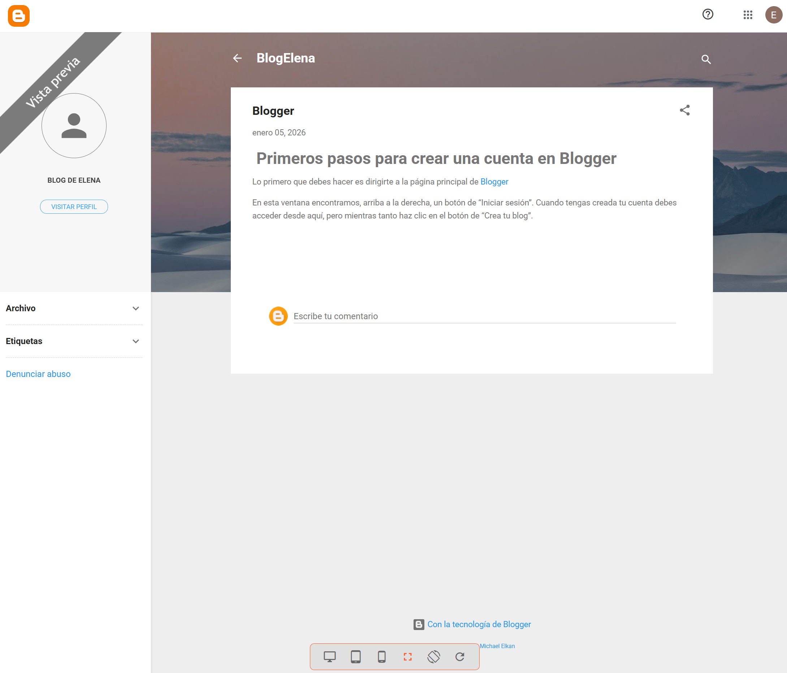
Para publicar tu primera entrada, haz clic en “Publicar“
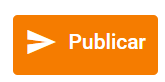
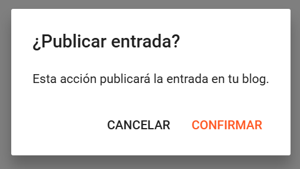
Para modificar una entrada ya publicada, símplemente debermos seleccionar la entrada, realizar los cambios y hacer clic en “Actualizar“
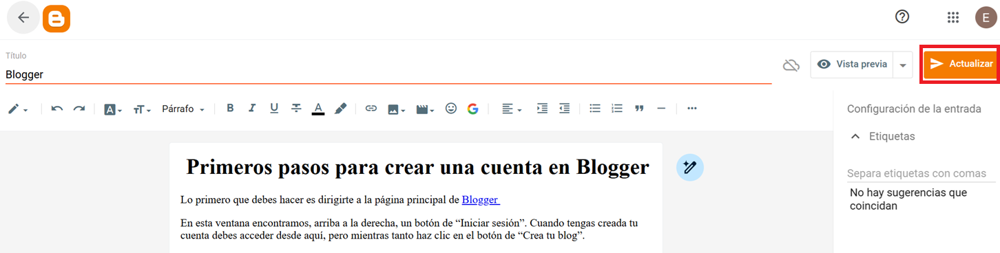
Cómo hacer una página en Blogger¶
Para hacer tu primera página tienes que ir a la sección lateral y hacer clic en el apartado “Páginas “.
Una vez dentro debes hacer clic en el botón que hay arriba a la izquierda que pone “Nueva página”.
Esta es la ventana principal de las páginas de Blogger.
- Para escribir el título de nuestra página, ve a la sección de título y escríbelo (Ejemplo Vídeo).
- Para escribir el contenido de tú página deberías hacerlo en la pantalla principal, donde antes pusimos el texto de nuestro post. En el ejemplo hemos añadido un vídeo de YouTube.
- Para guardarlo haz clic en el botón derecho de arriba donde pone “Publicar “
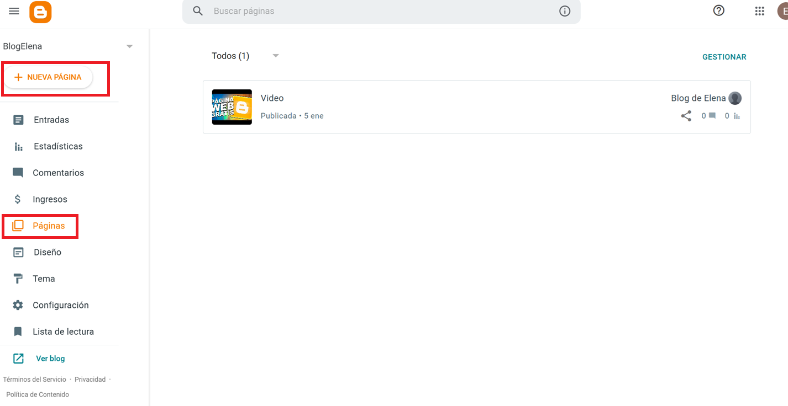
Tienes que hacer este procedimiento con todas las páginas con las que quieres estructurar tu sitio web.
Personalizar Blogger como una página web: diseño de la estructura¶
Como has visto antes, hay dos secciones llamadas “Diseño” y “Tema”. Entre estas dos vas a ir creando la apariencia que quieres para tu blog.
En el apartado de Diseño se construye la estructura de tu blog, personalizándola a tu gusto. Dentro de ésta, tienes las diferentes secciones que componen cada página, como la cabecera, la barra lateral, el título o el panel central.
- Para hacer que se visualicen nuestra páginas, debes ir a Lista de Páginas y activar el gadget. A continuación, debes añadir las páginas creadas.
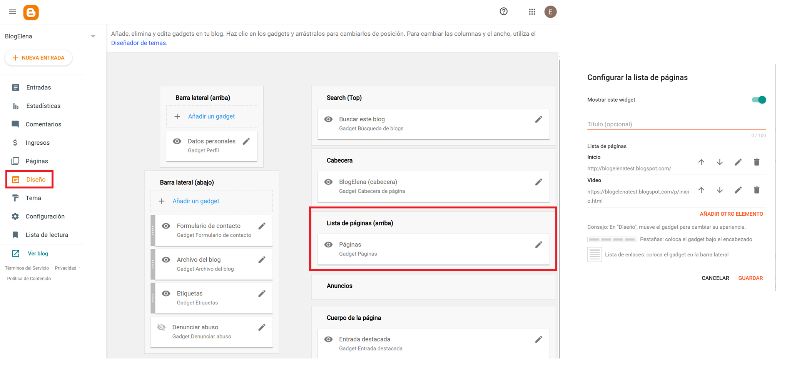
Asimismo, dentro de cada sección tienes los diferentes gadgets, como los anuncios de Adsense, el formulario de contacto, la lista de páginas etc.
- Para eliminar la denundiar abuso o añadir un formulario de contacto debemos editar la barra latera.
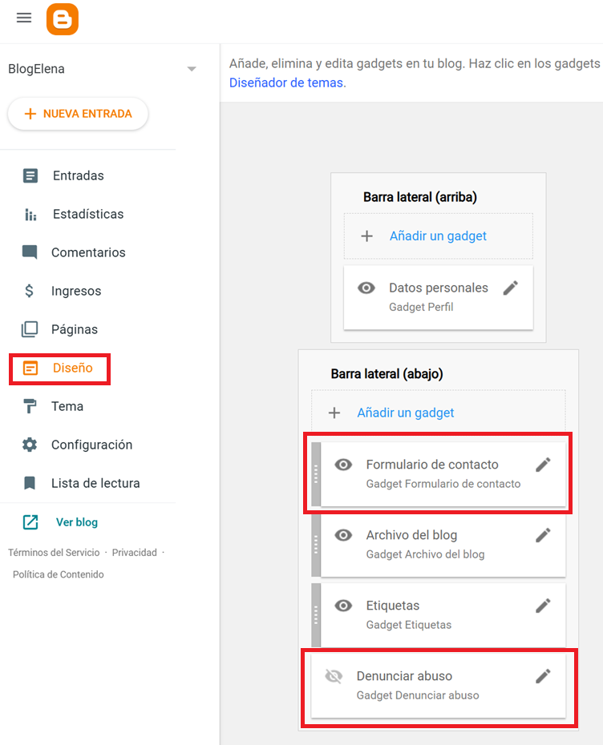
Temas para Blogger gratis¶
En el apartado de Tema, puedes modificar la apariencia, como los colores o el tipo de letra que quieres para tu blog. Blogger tiene temas ya instalados en la plataforma, que puedes activarlos cuando quieras.
Existen temas por defecto, “Contempo”. Puedes modificar ciertas cosas haciendo clic en “Personalizar”.
En el apartado de “Tema” puedes ver todos los disponibles de Blogger.
Esto te va a llevar a una nueva ventana, en la que ves cómo puedes cambiar la imagen de fondo, la gama de colores principales, o alguno más avanzado como la fuente del texto o el color de este; tienes muchísimas opciones para personalizarlo.
Una vez seleccionado el tema que quieres haz clic en “Aplicar”.
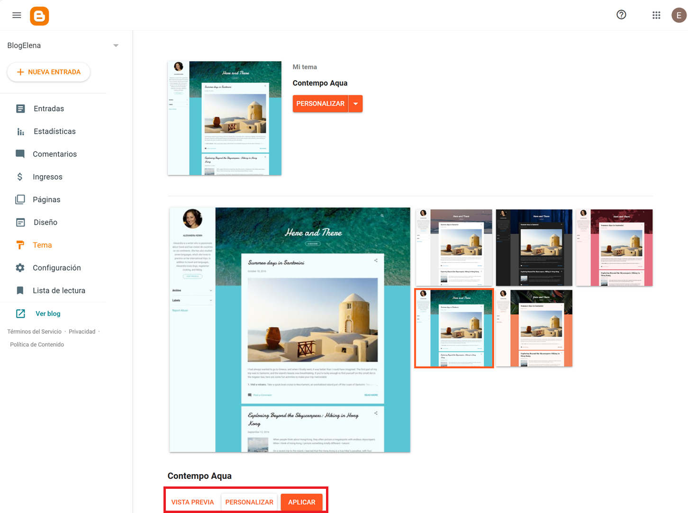
Visualizar tu Blog¶
Para visualizar tu blog debes ir a sección “Ver Blog”.
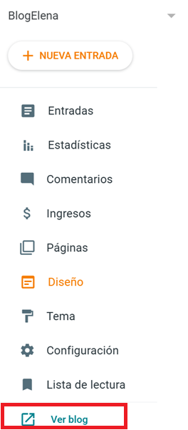
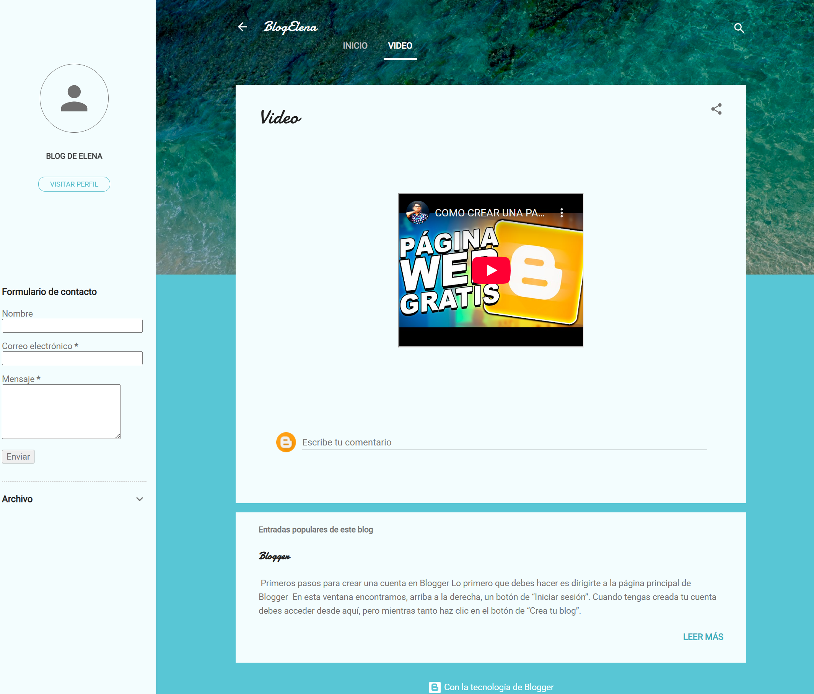
Actividad
📝 AA4.23 Crear un blog¶
(C.ESP2 / CE2.5 / IC1-3p)
Siguiendo los apuntes proporcionados, debes crear tu propio blog en Blogger, configurarlo correctamente y publicar contenido básico.
- Crea el blog.
-
Crea dos entradas con las siguientes características:
- Título de la entrada
- Al menos 2 párrafos de texto (puedes emplear cursiva, negrita..)
- Un hipervínculo a una web relacionada con el tema.
- Una imagen subida desde el ordenador.
-
Crea dos páginas:
- Sobre mi
- Video
La página debe contener:
- Título
- Texto explicativo en la primera página.
- Un vídeo de YouTube relacionado con el tema.
- Añade las páginas creadas para que se vean en el menú del blog.
- Revisa la barra lateral y elimina elementos innecesarios si es posible.
-
Apariencia del blog:
- Revisa la barra lateral y elimina elementos innecesarios si es posible.
- Selecciona un tema de Blogger.
-
Haz clic en Personalizar y cambia al menos:
- Colores principales o
- Tipo de letra o
- Imagen de fondo
- Aplica los cambios.
La entrega será el enlace de tu blog.
Referencias¶
- Ejemplo blog Blog de Elena